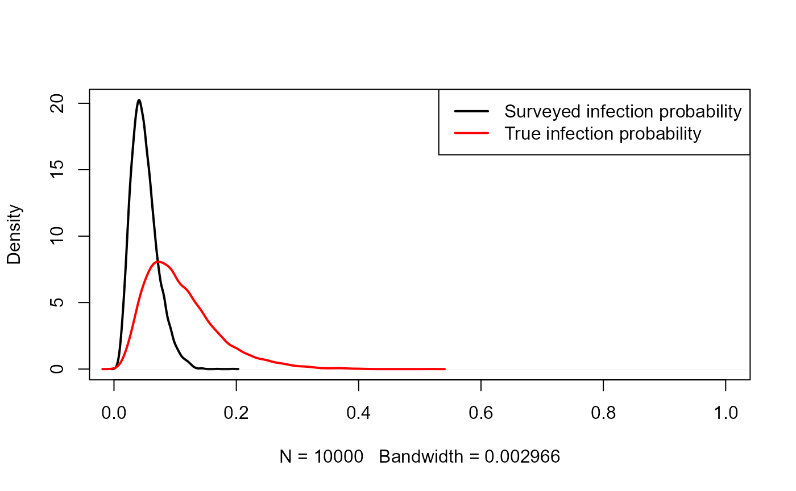
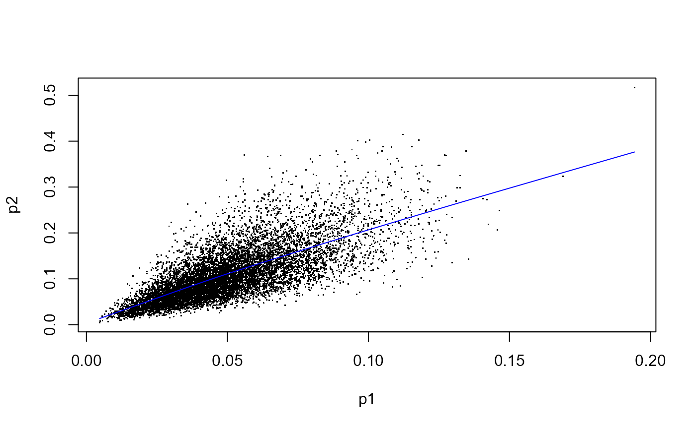

voi_remote.RmdThis document is heavily based on the VoI vignette written by Christopher Jackson, and is meant to show the compatiblity of the voi.remote packae with the original voi package. The voi.remote package has the exact same functionalities as voi package, but allows users to run all the VoI functions on the server rather than running locally.
The development version of voi.remote can be installed from GitHub with:
install.packages("remotes")
remotes::install_github("resplab/voi.remote")The inputs should be a data frame with one column per parameter and one row per random sample.
set.seed(1)
nsam <- 10000
inputs <- data.frame(p1 = rnorm(nsam, 1, 1),
p2 = rnorm(nsam, 0, 2))
outputs_nb <- data.frame(t1 = 0,
t2 = inputs$p1 - inputs$p2)
outputs_cea <- list(
e = data.frame(t1 = 0, t2 = inputs$p1),
c = data.frame(t1 = 0, t2 = inputs$p2),
k = c(1, 2, 3)
)
decision_current <- 2
nb_current <- 1
decision_perfect <- ifelse(outputs_nb$t2 < 0, 1, 2)
nb_perfect <- ifelse(decision_perfect == 1, 0, outputs_nb$t2)
(evpi1 <- mean(nb_perfect) - nb_current)## [1] 0.4778316
opp_loss <- nb_perfect - nb_current
mean(opp_loss)## [1] 0.4778316voi.remote package to calculate EVPIThe voi.remote package contains a simple function evpi.remote to compute the EVPI using the above procedure. The function called the corresponding function in the voi package on the server.
library(voi.remote)
evpi.remote(outputs_nb)## Calling server at https://prism.peermodelsnetwork.com/route/voi/run## [,1]
## [1,] 0.476
evpi.remote(outputs_cea)## Calling server at https://prism.peermodelsnetwork.com/route/voi/run## $k
## [1] 1 2 3
##
## $evpi
## [1] 0.4760 0.4028 0.4174
mean_truncnorm <- function(mu, sig, lower=-Inf, upper=Inf){
a <- (lower-mu)/sig
b <- (upper-mu)/sig
mu + sig * (dnorm(a) - dnorm(b)) / (pnorm(b) - pnorm(a))
}
enb_correct <- mean_truncnorm(1, sqrt(5), lower=0)
mean_nb_perfect <- enb_correct * prob_correct
(evpi_exact <- mean_nb_perfect - nb_current)## [1] 0.4798107The function evppi.remote can be used to compute this, similar to the evpi function (which is called on the server).
evppi.remote function.(a) As a vector.
evppi.remote(outputs_nb, inputs, pars=c("p1","p2"))## Calling server at https://prism.peermodelsnetwork.com/route/voi/run## $pars
## [1] "p1,p2"
##
## $evppi
## [1] 0.476(b) As a list.
evppi.remote(outputs_nb, inputs, pars=list("p1",c("p1","p2")))## Calling server at https://prism.peermodelsnetwork.com/route/voi/run## $pars
## [1] "p1" "p1,p2"
##
## $evppi
## [1] 0.0822 0.4760
evppi.remote(outputs_cea, inputs, pars=list("p1",c("p1","p2")))## Calling server at https://prism.peermodelsnetwork.com/route/voi/run## $pars
## [1] "p1" "p1" "p1" "p1,p2" "p1,p2" "p1,p2"
##
## $k
## [1] 1 2 3 1 2 3
##
## $evppi
## [1] 0.0822 0.1706 0.2590 0.4760 0.4028 0.4174The evppi.remote function returns a data frame with columns indicating the parameter (or parameters), and the corresponding EVPPI. If the outputs are in cost-effectiveness analysis format, then a separate column is returned indicating the willingness-to-pay.
evppi.remote(outputs_cea, inputs, pars=list("p1",c("p1","p2")))## Calling server at https://prism.peermodelsnetwork.com/route/voi/run## $pars
## [1] "p1" "p1" "p1" "p1,p2" "p1,p2" "p1,p2"
##
## $k
## [1] 1 2 3 1 2 3
##
## $evppi
## [1] 0.0822 0.1706 0.2590 0.4760 0.4028 0.4174
evppi.remote(outputs_nb, inputs, pars="p1", method="gp", nsim=1000)## Calling server at https://prism.peermodelsnetwork.com/route/voi/run## $pars
## [1] "p1"
##
## $evppi
## [1] 0.0883
evppi.remote(outputs_nb, inputs, pars="p1", method="earth")## Calling server at https://prism.peermodelsnetwork.com/route/voi/run## $pars
## [1] "p1"
##
## $evppi
## [1] 0.0881
evppi.remote(outputs_nb, inputs, pars=c("p1","p2"), method="inla")
evppi.remote(outputs_nb, inputs, pars=c("p1","p2"), method="gam", gam_formula="s(p1) + s(p2)")## Calling server at https://prism.peermodelsnetwork.com/route/voi/run## $pars
## [1] "p1,p2"
##
## $evppi
## [1] 0.476
evppi.remote(outputs_nb, inputs, pars="p1", se=TRUE, B=100)## Calling server at https://prism.peermodelsnetwork.com/route/voi/run## $pars
## [1] "p1"
##
## $evppi
## [1] 0.0822
##
## $se
## [1] 0.0068
evppi.remote(outputs_nb, inputs, pars="p1", n.blocks=20, method="so")## Calling server at https://prism.peermodelsnetwork.com/route/voi/run## $pars
## [1] "p1"
##
## $evppi
## [1] 0.08
evppi.remote(outputs_nb, inputs, pars="p1", method="sal")## Calling server at https://prism.peermodelsnetwork.com/route/voi/run## $pars
## [1] "p1"
##
## $evppi
## [1] 0.0815
model_fn_nb <- function(p1, p2){
c(0, p1 - p2)
}
par_fn <- function(n){
data.frame(p1 = rnorm(n, 1, 1),
p2 = rnorm(n, 0, 2))
}evppi_mc.remote
evppi_mc.remote(model_fn_nb, par_fn, pars="p1", ninner=1000, nouter=100)## Calling server at https://prism.peermodelsnetwork.com/route/voi/run## $evppi
## [1] -0.1702
par_fn_corr <- function(n, p1=NULL){
p1_new <- if (is.null(p1)) rnorm(n, 1, 1) else p1
data.frame(p1 = p1_new,
p2 = rnorm(n, p1_new, 2))
}
evppi_mc.remote(model_fn_nb, par_fn_corr, pars="p1", ninner=1000, nouter=100)## Calling server at https://prism.peermodelsnetwork.com/route/voi/run## $evppi
## [1] -0.4713
datagen_normal <- function(inputs, n=100, sd=1){
data.frame(xbar = rnorm(n = nrow(inputs),
mean = inputs[,"p1"],
sd = sd / sqrt(n)))
}
set.seed(1)
evsi.remote(outputs_nb, inputs, datagen_fn = datagen_normal, n=c(10,100,1000))## Calling server at https://prism.peermodelsnetwork.com/route/voi/run## $n
## [1] 10 100 1000
##
## $evsi
## [1] 0.0723 0.0809 0.0817
evsi.remote(outputs_nb, inputs, study = "normal_known", n=c(100,1000), pars = "p1")## Calling server at https://prism.peermodelsnetwork.com/route/voi/run## $n
## [1] 100 1000
##
## $evsi
## [1] 0.0804 0.0824
evsi.remote(outputs_cea, inputs, study = "normal_known", n=c(100,1000), pars = "p1")## Calling server at https://prism.peermodelsnetwork.com/route/voi/run## $n
## [1] 100 100 100 1000 1000 1000
##
## $k
## [1] 1 2 3 1 2 3
##
## $evsi
## [1] 0.0814 0.1686 0.2558 0.0813 0.1697 0.2580
likelihood_normal <- function(Y, inputs, n=100, sig=1){
mu <- inputs[,"p1"]
dnorm(Y[,"xbar"], mu, sig/sqrt(n))
}
evsi.remote(outputs_nb, inputs, datagen_fn = datagen_normal, likelihood = likelihood_normal,
n=100, pars = "p1", method="is", nsim=1000)## Calling server at https://prism.peermodelsnetwork.com/route/voi/run## $n
## [1] 100
##
## $evsi
## [1] 0.0883
evsi.remote(outputs_nb, inputs, study = "normal_known", n=100, pars = "p1", method="is", nsim=1000)## Calling server at https://prism.peermodelsnetwork.com/route/voi/run## $n
## [1] 100
##
## $evsi
## [1] 0.0887
p1 <- rbeta(10000, 5, 95)\[p_2 = expit(logit(p_1) + \beta)\].
beta <- rnorm(10000, 0.8, 0.4)
p2 <- plogis(qlogis(p1) + beta)
plot(density(p1), lwd=2, xlim=c(0,1), main="")
lines(density(p2), col="red", lwd=2)
legend("topright", col=c("black","red"), lwd=c(2,2),
legend=c("Surveyed infection probability", "True infection probability"))
var(p2)## [1] 0.0035409
inputs <- data.frame(p1, beta)
(evppi_beta <- evppivar.remote(p2, inputs, pars="beta"))## Calling server at https://prism.peermodelsnetwork.com/route/voi/run## $pars
## [1] "beta"
##
## $evppi
## [1] 0.0015
(evppi_p1 <- evppivar.remote(p2, inputs, pars="p1"))## Calling server at https://prism.peermodelsnetwork.com/route/voi/run## $pars
## [1] "p1"
##
## $evppi
## [1] 0.0019## [1] 0.05950546## [1] 0.04517632## [1] 0.04050802
plot(x=p1, y=p2, pch=".")
mod <- mgcv::gam(p2 ~ te(p1, bs="cr"))
p1fit <- fitted(mod)
lines(sort(p1), p1fit[order(p1)], col="blue")
## [1] 0.001888821\[var(Y) - E_{X}\left[var_{Y| X}(Y |X)\right] = var_{X} \left[E_{Y|X}(Y|X)\right]\]
var(p1fit)## [1] 0.001887927
evsivar.remote(p2, inputs, study = "binary", pars="p1", n=c(100,1000,10000))## Calling server at https://prism.peermodelsnetwork.com/route/voi/run## $n
## [1] 100 1000 10000
##
## $evsi
## [1] 0.0010 0.0017 0.0019
inputs_p2 = data.frame(p2 = p2)
evsivar.remote(p2, inputs=inputs_p2, study = "binary", pars="p2", n=c(100, 1000, 10000))## Calling server at https://prism.peermodelsnetwork.com/route/voi/run## $n
## [1] 100 1000 10000
##
## $evsi
## [1] 0.0028 0.0035 0.0035